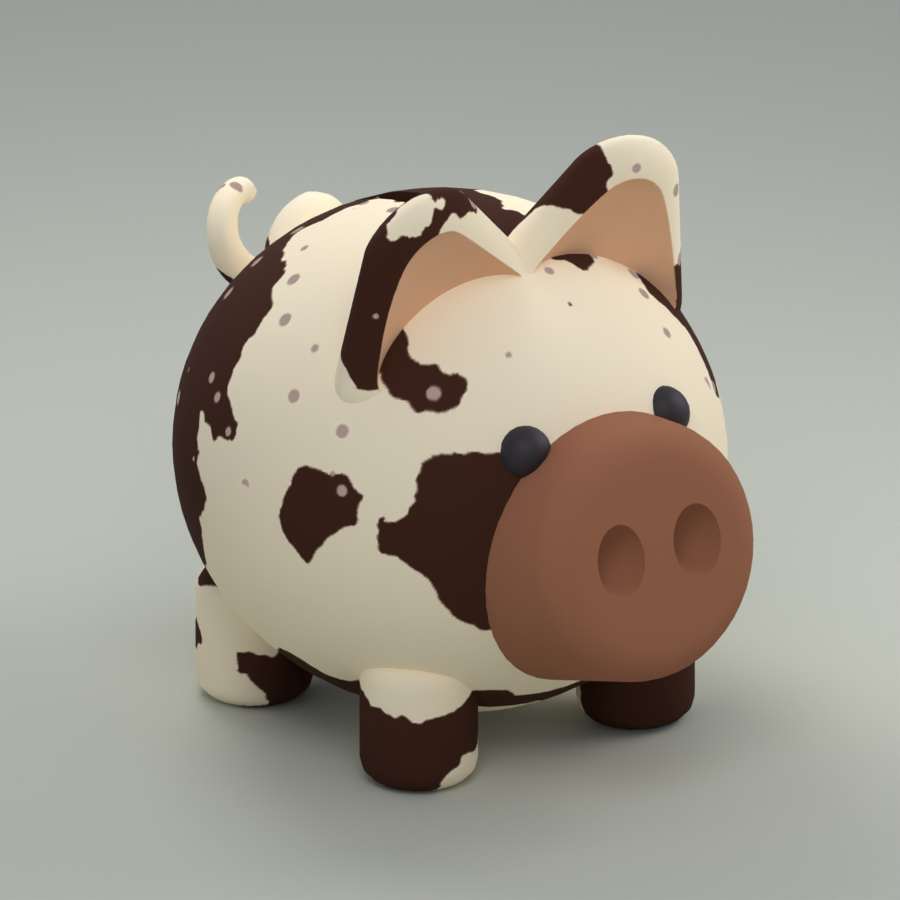
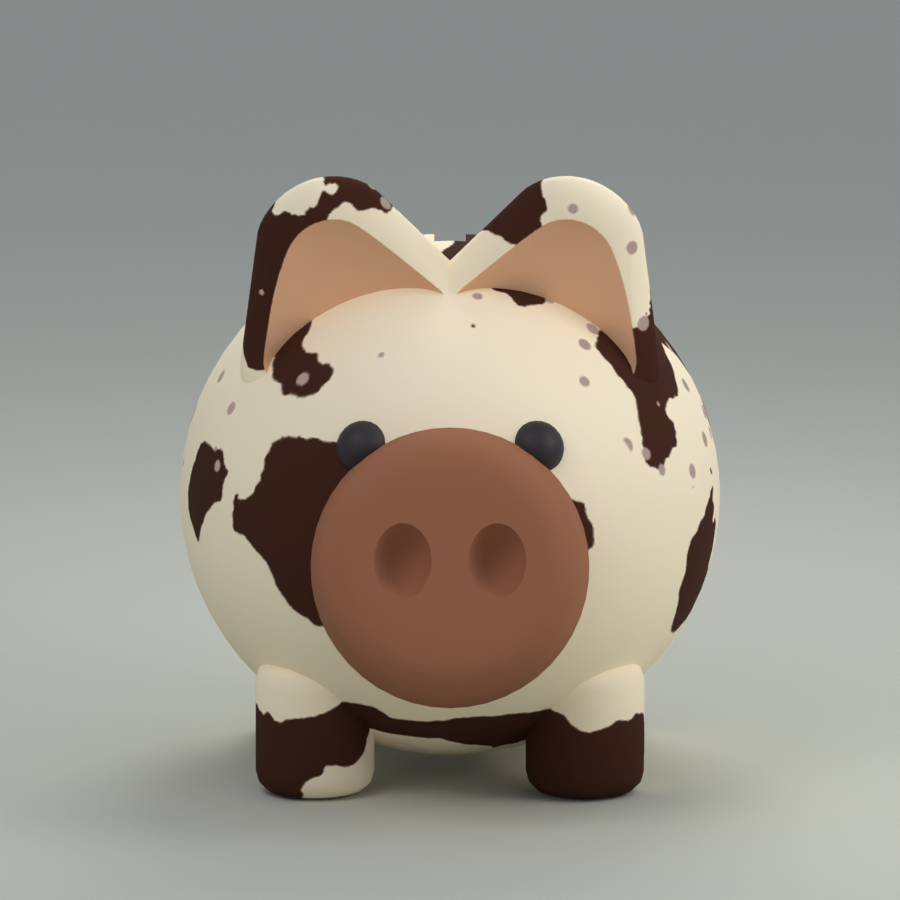
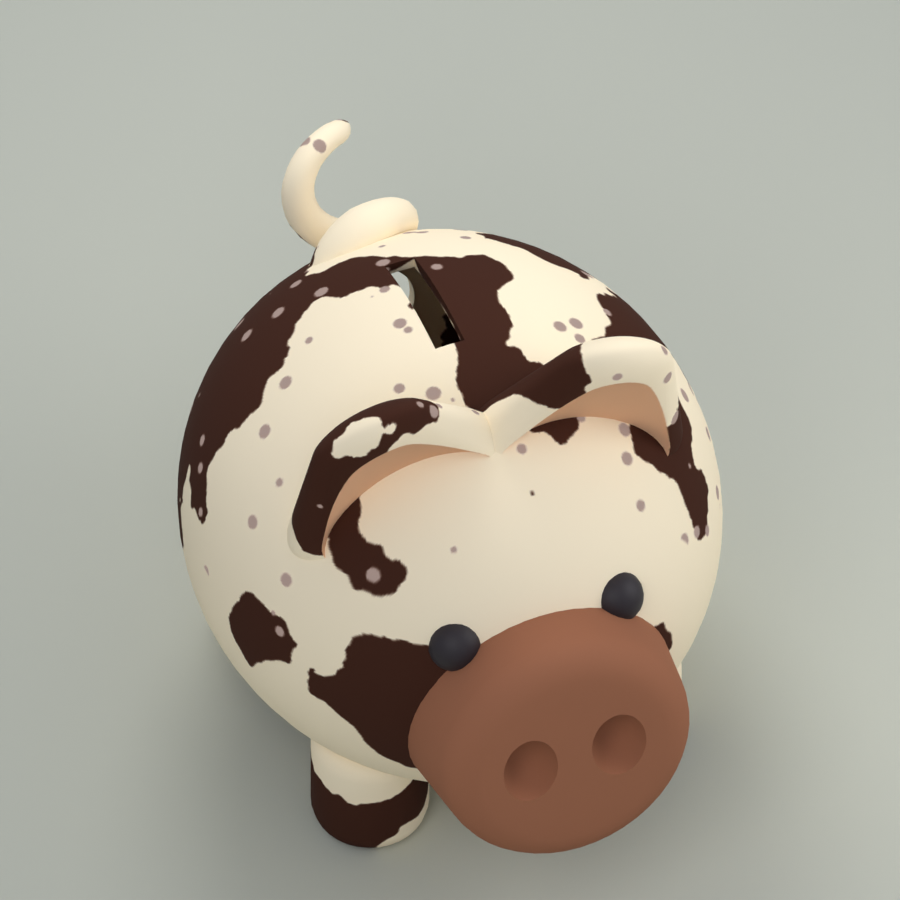
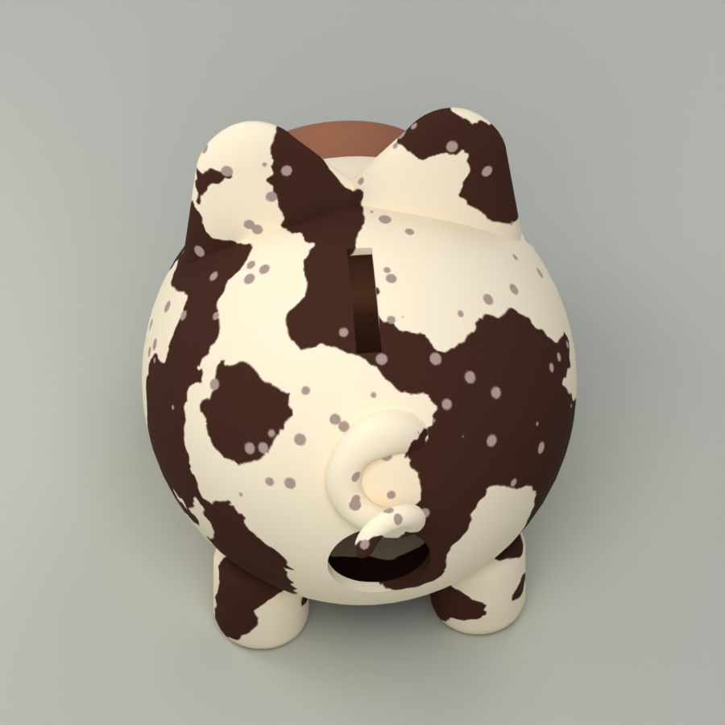
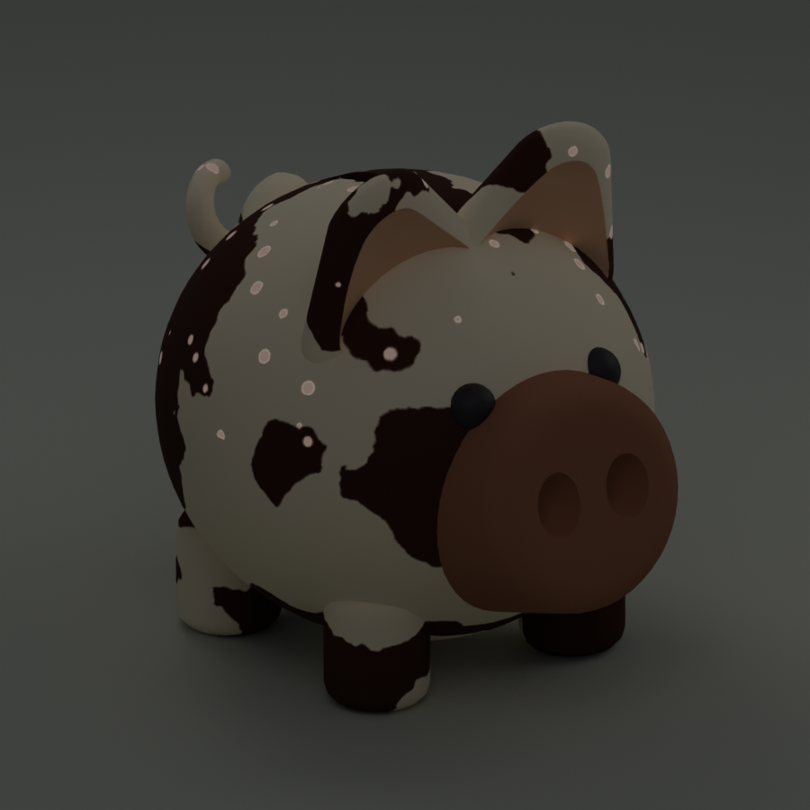

RARE · FIRST ART PASS
Cookies & Cream
Cow pattern, reworked in a new palette with small static glow accents. Shared pig shape and UVs retained.
Six meshes · 20,670 triangles · body width 12 studs · Blender previews




